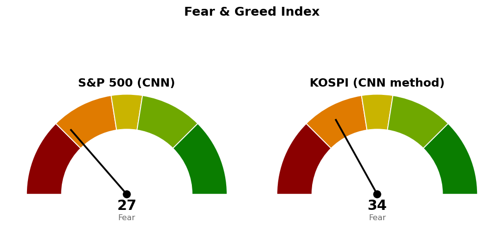

2026-11-04 장전 예측 4건: 4건 중 3건 적중(75.0%)
| 예측 | 근거 | 실제 | 판정 |
|---|---|---|---|
| 나스닥 종합 종가 25,685 하회 | 기준선 25,685 — 11/3 종가 25,372, 나스닥100 선물 +0.33%로 S&P 500 선물 +1.10%보다 약함, AI 데이터센터주 장전 약세 보도(CNBC) | 종가 25,737 (+1.44%) | 빗나감 |
| S&P 500 종가 7,625 상회 | 7번 반응한 가격 7,625 — 11/3 종가 7,569, S&P 500 선물 +1.10%, VIX 18.13 (-12.96%) | 종가 7,689 (+1.58%) | 적중 |
| S&P 500 장중 7,675 도달 | 20일선 7,675·50일선 7,675 — 11/3 고가 7,595, S&P 500 선물 세션 고가 7,688 | 고가 7,716 | 적중 |
| 기술 (XLK), S&P 500 대비 약세 마감 | 20일 초과수익 -9.42%로 11개 섹터 중 꼴찌, 나스닥100 선물 +0.33% 대 S&P 500 선물 +1.10% | -0.01% 대 S&P 500 +1.58% | 적중 |
US 최근 90일 누적 55건 중 41건 적중(74.5%) · 최근 20건 20건 중 14건 적중(70.0%)
나스닥은 시가 25,653에서 저가 25,602, 고가 26,049까지 움직인 뒤 기준선 25,685보다 52포인트 위인 25,737로 마감해, 하회를 건 예측이 빗나갔습니다.
직전 시황은 11/4 미국 장전 회차이며, 가격은 11/3 미국 마감 후 회차가 등록한 값입니다. 나스닥이 기준선 아래에서 마감한다는 장전 판단은 틀렸습니다.
| 직전 가격 | 판정 방식 | 11/4 결과 | 판정 |
|---|---|---|---|
| 나스닥 기준선 25,685 | 일봉 종가 상회 | 종가 25,737 | 충족 |
| 나스닥 도착지 25,899 | 장중 고가 도달 | 고가 26,049 | 충족 |
| 나스닥 다음 지지·사다리 1차 25,131 | 일봉 종가 하회 / 장중 저가 도달 | 저가 25,602 | 미충족 |
| 나스닥 취소선 24,262 | 일봉 종가 하회 | 종가 25,737 | 미충족 |
| S&P 500 기준선 7,782 | 일봉 종가 상회 | 고가 7,716 · 종가 7,689 | 미충족 |
| S&P 500 다음 지지 7,541 | 일봉 종가 하회 | 저가 7,636 | 미충족 · 지킴 |
| S&P 500 취소선 7,517 | 일봉 종가 하회 | 종가 7,689 | 미충족 |
| QQQ 730 · XLE 70.80 · XLP 94.21 · XLV 190달러 | 일봉 종가 상회 | 691.95 · 63.52 · 91.94 · 189.66달러 | 미충족 |
두 지수 모두 직전이 적은 "못 지키면" 가격까지 내려가지 않았습니다. 나스닥의 직전 계획은 기준선과 도착지가 모두 충족되어 끝났으므로 기준선 · 도착지 · 다음 지지를 새로 잡고, 사다리 두 회차와 취소선은 미집행 상태로 그대로 둡니다. 도착지 도달 뒤 고가 26,049에서 312포인트(하루 평균 변동폭의 0.70배) 내려 마감했습니다. S&P 500은 직전 계획을 그대로 유지하며 숫자도 같습니다.
20일선·50일선은 지수이동평균입니다. 경로를 말할 근거가 없어 방향을 말하지 않고 기준선과 두 갈래만 냅니다.
기준선과 다음 지지 모두 한 세션 안에 닿는 거리입니다. 기준선을 26,000에 둔 근거는 11/4 종가가 25,803~26,000 구간 아래로 되돌아왔다는 점이며, 이 구간 위 종가가 나와야 그 위 26,074~26,289를 볼 수 있습니다. 180일 박스(21,425~27,401) 안쪽 판정은 중립(지지 테스트 거래량 혼조, 저점 절하, 상승봉 대 하락봉 거래량비 1.03)입니다.
기준선은 하루 평균 변동폭보다 먼 거리입니다. 11/4 종가는 20일선과 50일선을 동시에 넘었고 시가이자 저가인 7,636은 11/3 고가 7,595 위에 있어, 그 사이 가격대는 거래 없이 비어 있습니다. 7,517 아래로는 7,450~7,470(피보나치 61.8% 되돌림 + 7,450 라운드), 그다음 7,368(피보나치 78.6% 되돌림)이 있습니다. 180일 박스(6,475~7,828) 안쪽 판정은 중립(지지 테스트 매도 거래량 감소, 저점 절하, 거래량비 1.00)입니다.
S&P 500 7,689가 200일 이동평균 7,320 위(+5.03%, 4/8부터)라 새 계획을 낼 수 있는 국면입니다.
| ETF | 등록일 | 현재 | 진입 | 손절 | 목표 | 상태 |
|---|---|---|---|---|---|---|
| Invesco QQQ (QQQ) | 2026-10-22 | 691.95 | 730 | 717 | 750 | 진입 대기 |
| 에너지 (XLE) | 2026-10-20 | 63.52 | 70.80 | 68.87 | 74.54 | 진입 대기 |
| 필수소비재 (XLP) | 2026-10-23 | 91.94 | 94.21 | 92.40 | 99.40 | 진입 대기 |
| 헬스케어 (XLV) | 2026-10-30 | 189.66 | 190 | 185 | 207 | 진입 대기 |
이번 회차 새 ETF 스윙 계획은 없습니다. XLP · SPY 대표 셋업은 눌림 매수(1:2.89 (손절 0.96 ATR) · 1:1.87 (손절 0.95 ATR), 평균회귀형)인데 진입가가 현재가 아래에 있어, 진입을 종가 상회로 판정하는 ETF 계획 채점으로는 계획과 다른 가격으로 잡힙니다. 둘 다 조건 점검 미달은 상대강도선 신고가 · 거래량 강도(되돌림인데 5일 평균이 20일 평균의 1.34배 · 1.29배) · 박스 안쪽(분산 우위)입니다. QQQ 회복 매수는 1:0.58 (손절 2.86 ATR)로 패스입니다.
상위 2개는 필수소비재 · 헬스케어로 직전과 같은 두 섹터이며 순서만 바뀌었습니다.
종목 발굴: 200개를 훑어 1차 18개, 구조 판정 12개 중 3개가 남았습니다(거래대금 미달 104개, 추세 미달 37개, 52주 고점 대비 위치 벗어남 27개, 최근 리포트가 나간 종목 7개, 지수 대비 상대강도 미달 7개, 추격 비권장 2개, 박스 판정 불가 1개 등 탈락). 1순위 브리스톨마이어스 스퀴브 (BMY, 헬스케어)는 이 브리핑 뒤에 배치가 정식 리포트를 씁니다. 덱스컴 (DXCM)과 앤하이저부시 인베브 (BUD)는 후보이며 리포트가 아닙니다 — 텔레그램으로 종목명을 보내면 리포트가 나갑니다.
| 항목 | 값 | 직전 대비 |
|---|---|---|
| 미국 경기선행지수 | 101.00 (9월) | 전월 대비 +0.05 · 직전 회차와 같은 값 |
| 한국 경기선행지수 | 102.53 (9월) | 전월 대비 -0.13 · 직전 회차와 같은 값 |
| 미 10년 명목금리 | 확정 4.95% (11/3) · 지수 시세 4.894% (11/4) | 확정 +0.04%포인트 · 시세 -0.058%포인트 |
| 미 10년 기대물가 | 2.30% (11/3) | +0.01%포인트 |
| 미 10년 실질금리 | 2.65% (11/3) | +0.03%포인트 |
| 유가 (WTI) | 확정 99.64달러 (11/3) · 선물 88.11달러 (11/4) | 확정 -0.42달러 · 선물 -8.30% |
| 달러지수 (광의) | 121.67 (10/30) | -0.07 · 갱신 없음 |
| 변동성지수 (VIX) | 16.61 (11/4, 장중 16.57~19.22) | 전일 20.83 · -20.26% · 백분위 산출물 없음 |
경기선행지수는 장기 평균을 100으로 놓고 경기 방향을 몇 달 앞서 보여주는 OECD 지표이며, 새 발표가 없어 해석을 바꾸지 않습니다. 11/3 명목금리 +0.04%포인트는 실질금리 +0.03%포인트, 기대물가 +0.01%포인트로 나뉩니다. 11/4 선물 -8.30%가 기대물가에 반영됐는지는 11/4 값이 없어 알 수 없습니다. 금 · 장기채 가격은 받지 않아 실질금리 방향과의 일치 여부는 적지 않습니다. 이 절은 지수 기준선에 반영하지 않습니다.

S&P 500은 CNN 공식값이며 1주 전 34.4, 1개월 전 38.2였습니다. 지수가 +1.58% 오른 날에도 낮은 항목은 정크본드 수요 2.6, 안전자산 선호 9.8, 풋/콜 비율 17.6이고 가장 높은 항목은 변동성 50.0, 주가 폭 45.4입니다. 코스피는 CNN 방식을 한국 데이터로 재구성한 값이며 공식 지수가 아닙니다. 일곱 항목을 모두 썼고 기준일은 11/4입니다. 가장 낮은 항목은 모멘텀 7.2, 안전자산 선호 15.6이고 가장 높은 항목은 풋/콜 비율 73.6입니다.
| 날짜 (미국) | 이벤트 | 확인할 것 |
|---|---|---|
| 11/5 | 실업수당 청구 | 나스닥 26,000 · 25,500, S&P 500 7,782 · 7,541 대비 종가 |
| 11/6 | 고용보고서 · 실업률 | 고용 |
1. 매수 쪽 — 나스닥 사다리는 25,131에 장중 저가로 닿으면 계좌의 2%, 24,425에 닿으면 2%를 더 삽니다. S&P 500은 두 회차를 모두 채워 이번엔 살 자리가 없습니다. 11/4 상승을 따라 지수를 더 사는 계획은 없습니다. 2. 일봉 종가로 나스닥 24,262 아래면 남은 회차를 멈추고 산 회차를 다음 세션에 전량 매도 (사다리 취소), S&P 500 7,517 아래면 1차(7,653) · 2차(7,578)를 다음 세션에 전량 매도 (사다리 취소)합니다. 3. XLV 진입 대기 — 일봉 종가 190달러 상회 시 계좌의 13% 이내로 진입, 185달러 장중 도달 시 전량 매도 (손절), 207달러에서 전량 매도 (목표 도달). 4. QQQ 진입 대기 — 일봉 종가 730달러 상회 시 계좌의 13% 이내로 진입, 717달러 장중 도달 시 전량 매도 (손절), 750달러에서 전량 매도 (목표 도달). 5. XLP 진입 대기 — 일봉 종가 94.21달러 상회 시 계좌의 13% 이내로 진입, 92.40달러 장중 도달 시 전량 매도 (손절), 99.40달러에서 전량 매도 (목표 도달). 6. XLE 진입 대기 — 일봉 종가 70.80달러 상회 시 계좌의 13% 이내로 진입, 68.87달러 장중 도달 시 전량 매도 (손절), 74.54달러에서 전량 매도 (목표 도달).
다음 세션에 볼 것 — 나스닥이 26,000 위에서 마감하는지입니다.
ATR: 하루 평균 변동폭(14일).
지수이동평균: 최근 가격에 더 무게를 둔 평균.
상대강도지수(RSI): 최근 14일 상승폭과 하락폭의 비율로 과열·침체를 보는 0~100 지표.
VIX: S&P 500 옵션 가격에서 뽑은 향후 30일 예상 변동성.